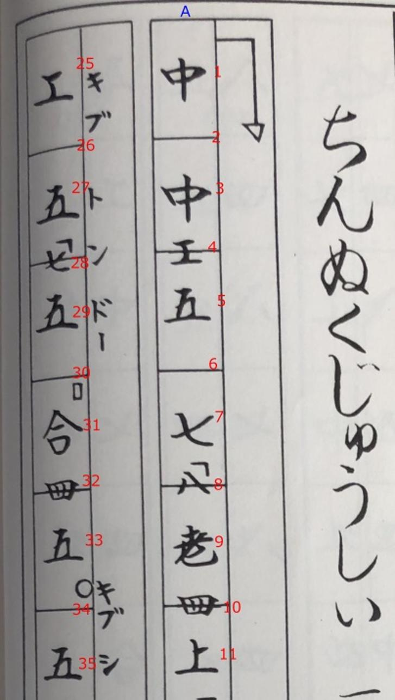
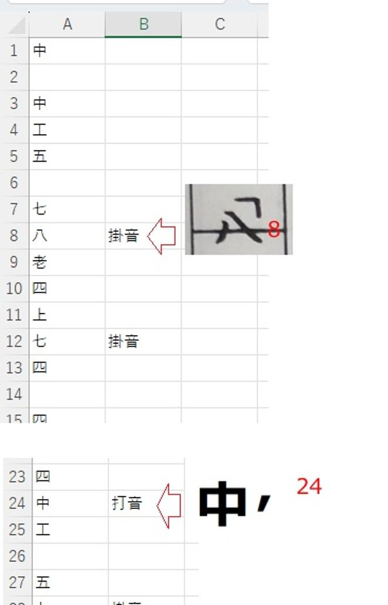
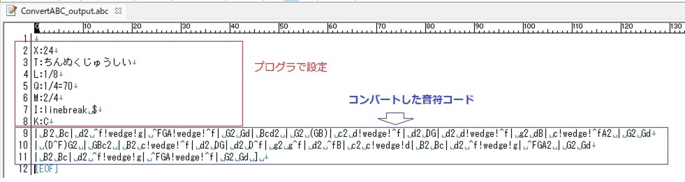

うるがいの話 ある日
最新: クリスマスイブ【うるがいの話 ある日】とは 一日だけのプログです
『うるがいの話』の最新一日だけのプログで、通信料が少なく経済的だ。カニの画像をクリックすると全ての日付が載る『うるがいの話』サイトを表示します
|
|
【うるがいの話】 うるがい(ｳﾙｶﾞｲ urugai)とは、『もずくがに』の名前でとても大きくなります。 |
|---|---|
|
|
【カミマヤーの話】 猫のことを方言でマヤーといいます。カミマヤー（kamimayaa）とは、神の猫のことです。 |
|
【たながぁの音楽】 たながぁ（ﾀﾅｶﾞｰ tanagaa）とは手長えびのことで、何種類かあり大きいのは車 エビぐらいになります。 |

|
【ぶながぁの話】 ぶながぁ(ﾌﾞﾅｶﾞｰ bunagaa)とは、赤い髪の毛、赤い身体、そして身長は１ｍ２０ｃｍ ぐらい、川の蟹を食べているの目撃された。場所は沖縄県国頭郡大宜味村のと ある村僕の隣近所に住んでいる爺さんから、聞いた話です。 |
|
|
【ギーマの話】 ギーマ(giima)とは、山原の里山に咲くスズランに似た、 花を付けます。実は食べられます、 気が付くと口の周りが紫になっています。 |
2025年12月24日 (水）クリスマスイブ
21:15
『ラスト・クリスマス』を優先させるため１２月１５日から中断
していた『ちんぬくじゅしい』の楽譜作成に着手する。さて、工
工四はどれを参考にするかと、工工四が載っているいくつかの本
を調べる、案の上、微妙に違う。えい、工工四から楽譜へ展開す
るプログラムを作るべ、と作ったが中断していたため、忘れてし
まった。で、手順書を改めて作成する事にした。下は、概要であ
る。
本の工工四を撮った画像データにマーキングし、エクセルに打ち
込む。
 
エクセルからエクスポートしたcsvデータを、ABC楽譜が扱える
データにプログラムでコンバートする。

下がABC楽譜データで工工四を楽譜に展開したものである

なかなかである。
今日はクリスマスイブだが、ケーキは買っていない。コドモがゴ
マを連れて、ケーキを持ってくるという。１２月４日に泊魚市場
でかった刺身と、毎度の鯛の汁を私が準備した。高級のケーキ（
６千円）、全部でなく６分の１が親の分をもらった。セコイがマ
持ってくるだけましか。食べました、美味しかった、ほんとに少
なくて欠片だった。